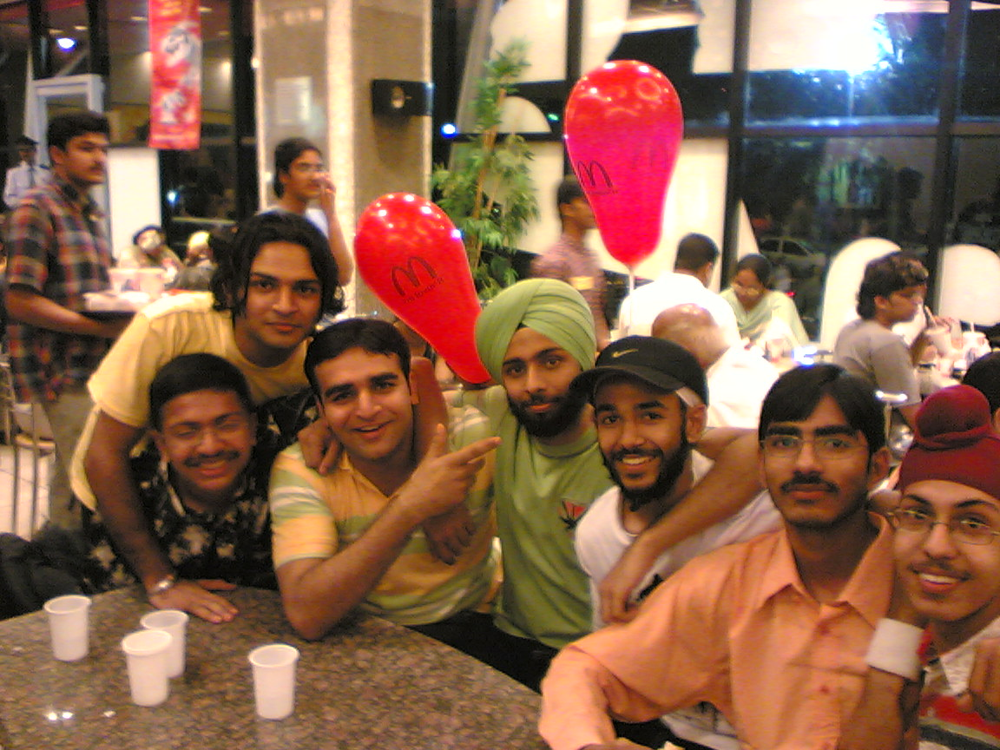
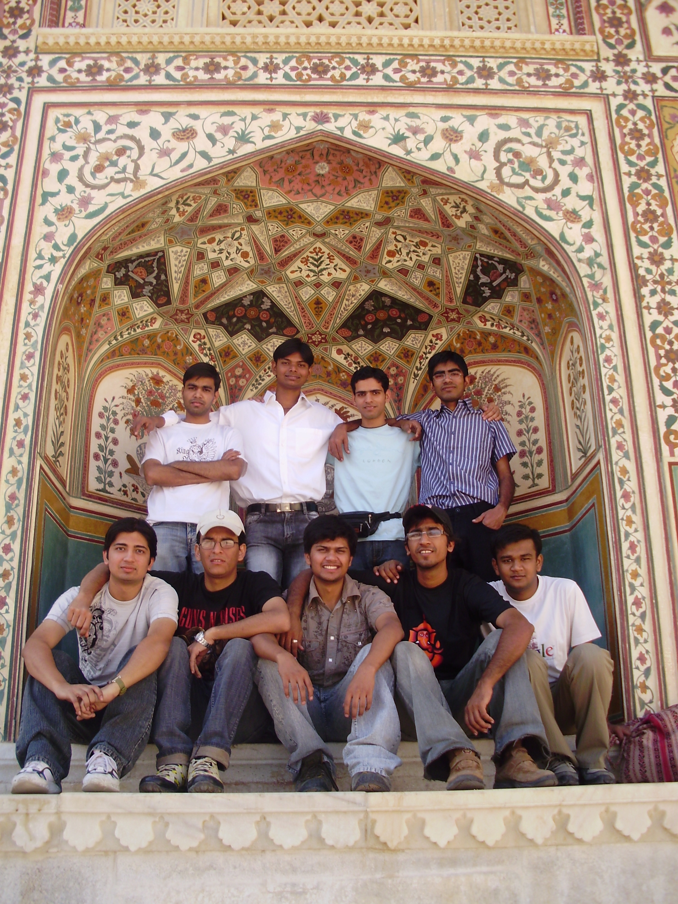
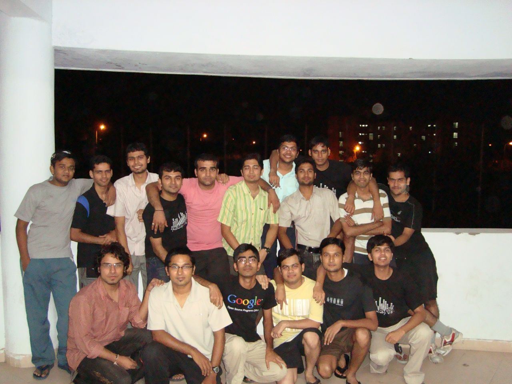

The Yearbook - Commemorating 2005-09!
Sachin's profile information
Name - SachinBirthday - 13th July 1987
Email - sachinfor42@yahoo.co.in
Address - c/o S.k.Enterprises, Near Bus Stand , Manendragarh Distt Koriya Chattisgarh 497442
Phone - 07771242417
Webpage - Link
Hobbies - Movies, BC , sleeping
WishList - Winona Ryder ;)
Memorabilia - Felicity'08 Last night
What would you want to be remembered as - icshan
Future Plans - Job if manage to get an offer letter ;)
Testimonials written to Sachin
Sachin's Album

.jpg){kind=link}
Default caption

{kind=link}
Default caption

{kind=link}
Default caption
Testimonials
For Subhashis ChandChand, the leader of the batch. I think he is the base behind our batch stand united, unique . Bow to you, friend, for every decisions you took for us
 Right from first year,I used to think of him as this friendly giant
Right from first year,I used to think of him as this friendly giant  Kabhie-2 darr lagta hain ki maar dega but again lagta hain ki koi marne aayega toh uski maar lega, he is aggressive, I remember in 2nd year he came to me and said "yaar mere bhai, papa kisi ko bhi lapet lete hain , mujhe bhi kisiko maarna hain, tujhe kisi ko maarna hain toh bol, saath jaake maarenge" I was like
Kabhie-2 darr lagta hain ki maar dega but again lagta hain ki koi marne aayega toh uski maar lega, he is aggressive, I remember in 2nd year he came to me and said "yaar mere bhai, papa kisi ko bhi lapet lete hain , mujhe bhi kisiko maarna hain, tujhe kisi ko maarna hain toh bol, saath jaake maarenge" I was like  kya ho gya bhai ,sab normal hai. He can be always found with variety of ppl, mixes with them pretty good,right from 1st to 4th year, aisa lagta hain sab fan hain iske
kya ho gya bhai ,sab normal hai. He can be always found with variety of ppl, mixes with them pretty good,right from 1st to 4th year, aisa lagta hain sab fan hain iske  , and he also take cares of everyone. Anyway this placement season brought us more close. He always used to come to my wing and cry for placements
, and he also take cares of everyone. Anyway this placement season brought us more close. He always used to come to my wing and cry for placements  ki kaise sab log written nikal rhe hain , Actually he was one of the main reason why I became so cool that time, Isko shaanth krane ke chakkar mein I realized this is not the end of life and zyada kuch fraq nahin padta, anyhow one day I heard he was selected, I was among the gang who gave him bumps he will always remember, cherry on the top was the fact that he will be in Bangalore
ki kaise sab log written nikal rhe hain , Actually he was one of the main reason why I became so cool that time, Isko shaanth krane ke chakkar mein I realized this is not the end of life and zyada kuch fraq nahin padta, anyhow one day I heard he was selected, I was among the gang who gave him bumps he will always remember, cherry on the top was the fact that he will be in Bangalore  Bhai, party every weekend for sure. Baki I know tu hain toh I don't have to worry a lot. Room mein kabhi toh rehta nahin hain aur mujhe bolta hain ki aata nahin
Bhai, party every weekend for sure. Baki I know tu hain toh I don't have to worry a lot. Room mein kabhi toh rehta nahin hain aur mujhe bolta hain ki aata nahin  faltoo mein gussa ho jaata hain but still jab bhi milte hain always have a good time Cheers dude ,for your attitude, friendly and caring nature Be the same, you are really gem of people
faltoo mein gussa ho jaata hain but still jab bhi milte hain always have a good time Cheers dude ,for your attitude, friendly and caring nature Be the same, you are really gem of people 
Enjoy

Baki Masti to B'lore mein continue rahegi
Will Miss U for :- Caring attitude, Leadership qualities, Daroo Party
Most Memorable moments : - Placement Season
Msg for U: - Quit Smoking
For Prashant Mathur
Hyper active banda hain, you can always find him arnd for BC, masti and any game u want to play. He is the reason y most of us play CZ nowadays. He is very good in CZ, I guess best among us
Another game I enjoy playing with him is cards, banda aisi bewkofi karta hain, ki u just laugh He is damn cool and friendly Streethawk serial ke liye bahut roya hain , but finally he got them I guess,is fan of movies and serials, hamesha DC mein bhi BC karta rehta hain. Some of his comments makes to laugh like anything. Laal badi jaldi ho jaata hain, kewal choone se hi lal ho jaata hain , Bball khelta tha pehle, but being in Vayu kabhi zyada mehnat karne ki zaroorat nahin padi , OBH cricket mein fodu hain although field ekdum faltoo hain but batting awesome karta hain. Dance bhi karta hain, I remember you fresher dance, where you were in middle, surrounded by other Vayuites. TT khelta samay kafee serious rehta hain, us samay zyada BC achchi nahin lagti ise, Kul milake yeh din bhar idhar-udhar khelta rehta hain ya fir kuch dekhta rehta hain  vaise toh LTRC mein hain but abhi tak paper nahin hain Hope you will complete MS at the earliest(humare jaane ke baad kuch kaam bhi kar lena ) and keep in touch
vaise toh LTRC mein hain but abhi tak paper nahin hain Hope you will complete MS at the earliest(humare jaane ke baad kuch kaam bhi kar lena ) and keep in touch
Enjoy
For Himank Sharma
Himank ya Bhalu , the guy next door in cellar. I remember one day I was playing lucky ali's Sunoh in very high volume, suddenly he came to my room, I thought he will ask me to lower the voice, on the contrary he was happy and told me how much he love Lucky ali and recommended me few of his songs. Banda nhate samay hamesha gaata tha, he, alok aur shashank used to make that place unbearable. Is a fodu blogger and 200% BCBaaz, BC ke liye hamesha ready rehta hain, chahe woh mailing list mein karni ho ya fir any place. Peene ke maamle mein I don't think anyone in our batch can give him a competition
Banda intelligent hain, means w/o much effort he manages to crack IIM, MS intern exam . His multitasking is really admirable. Placement ke samay bhi banda har written nikalta tha, when I told him "You are selected in IVY" , his response was "abe yaar mazzak mat kar" , who does that. Highest Level of coolness yeh yaar yeh toh His passion abt cricket and Sachin (Tendulkar ) is worth mentioning. Banda knows everything abt him. I know you will be fodu in evrything you do but still best of luck for that , keep calling
Enjoy
P.S. Yaar bahut kuch tha likhne ko but abhi yaad nahin aa rha hain
For Aditya Agrawal
Adi, the fodu log of batch. Highly intelligent, sophisticated, passionate and a big BC bazz
Waise humare interaction zyadatar booze sessions mein hi hue, still he is among ppl who cares abt batch a lot. Placement ke samay toh banga aur isne itna kaam kiya hain I just have to hug you guys for all the work you have done Handling Jayadev,calling companies, subah 4 baje uth kar 11 baje tak rehna .... seriously hats off Although he super BOND of algorithms and DS, this guy had fucked his Google interview, by not telling them the answer of "What is BST?" He is crazy abt MS, always praises there products and will fight you if you dare to utter some bad things abt the company. He is among the ppl present after felicity 3rd night. The Coffee machine dope incident still make me laugh All the three parties I had with him, he remains cool, listens your every point, correct you nicely if you are wrong , take care of you not matter you are OUT or not and listens rock. Haan rock ka bada fan hain, felicity ke samay you can how much excited he was on rock night.. moshing and headbanging that night was awesome All the best dude for your future in MS, hope you will be VP of MS soon Keep in touch For Manish Arora
Gajini, NoVirus, Arora, Jaat, Has a cool and friendly nature. Although he is the topper of our batch but is a down to earth guy. Hamesha ready rehta hain help karne ke liye. Right from 1st year he has same cool attitude but haan tab thoda zyada rota tha grades ke liye, but fod diya ladke ne . I guess he will be the gold medalist from our batch
He and Pankaj always used to give stats about production of crops in Haryana , argue with Banga abt how Haryana rox and punjab sucks etc. Lately, playing VB and CZ with him is extreme fun. VB mein toh apni team mein spike karta hain , service awesome karta hain,altough we loose few games here and there, but overall fodu types ki BC ho jaati hain.CZ mein toh aisa lagta hain energybooster pi ke aaya hain, hamesha dodta rehta hain, bechare bansi ko bakra bnata hain mujhe maarne ke liye I enjoy playing cz these days because of you and bansi and lol comments
Baki logon ne likh hi diya hain but I still I have to mention abt his dedication abt task he take in hand or decides to do. Recent example is of GYM, bhai sahab do-teen ghante tak lage rehte hain GYM mein
Placement ke samay OS ka kya tute liya tha, just mindblowing, 2-3 class mein poora cover kar liya tha ki kya zaroori hain aur kya nahin. TT bhi khub khela hain iske saaath. He is good player and excellent partner for doubles MS is really lucky to have you Best of luck for your career in MS, hope you will continue to excel in every step of your life .
Lastly
for you
Enjoy
For Karan
Maroo, the coordinator of our grand fest.
for all the work you had done. You were sincere, passionate, open, and like a leader carried everyone with you . Although he lived in cellar for a year, I hardly knew him that well, apart from his characteristics like time-table , fodupanti, a good speaker, his passion for cricket and his worries about getting a good CG. I think this few of his characteristics has made him winner in every phase of college life. He is now popular, is friends to many and a totally dependable guy for all the batchmates. He has really made his success path. Kudos to you dude The felicity after night party was the first time we opened ourselves (whatever may be the reason ) Since then its not just "hi" here and there , we talk often, during BC sessions, Dinner, lunch and whenever I meet him, we can always have something to talk and laugh about . Placement walein din bhi I was chilled, mujhe lag rha tha ki network based company hain, mein kya karoonga, but this guy told me to just think that you can crack it and go for it, thanx for the support dude
Apart from kharkhwal he was another fellow whom I always looked as an IIM-A guy, anyhow that was just a bad luck you didn't cleared in subject you excel but I am sure you will do great even in IIM-I or IVY, whatever you choose, best of luck for that
I don't have lots of incidents to tell you but I can say there has been established a bond among us. I think it would be forever
Will Miss U for :- During meal time BC, Daroo Party , arranging things
Most Memorable moments : - Felicity night
Msg for U: - keep up the spirit dude
For Rahul Tenany
Raole,among sincerest and most hard working guys of the batch. He always keeps on smiling, saare photo mein almost same hi pose rehte hain iske
His talent was known in first few classes, he showed everyone how much he knew and how much he knows about the computers and all. I think everyone wonders how he knew so much  He has his computer beside mine. He keeps his damn hard like xp installation ke
He has his computer beside mine. He keeps his damn hard like xp installation ke
Shopping freak hain, season discounts ke samay, pta nahin kitne saare kapde leta hain , he has great dressing sense
Has special concern for his health, roz 5-6 km dhodta hain even friends se bhi gentleman ki tarah baat karta hain , calmly and slowly Loves going out, always ready to try new things, Indijoe ki party you gave was just awesome . Coming to movies, hamesha ask movies with happy ending, language doesn't matter for him , telugu, tamil, chinki har type ki chalti hain . Salman ka bhakt hain, uski har movie ko bahut pasand karta hain Another thing I appreciate him for that he speaks the person in the face about what he thinks Thoda kanjus sa hain but apne uppar kharach kar leta hain. Ladkiyon ke mamle mein toh GOD hain , yane ki koi bhi ladki ki info. chahiye ho, just give him name, location and he will search the details We are placed in the same company. During placements, although mere interview theek gaye the but I was like ki Tenany ke saamne kahan hoga mera , luckily they took both of us . As we are placed together I guess, we will nurture our friendship further. Will enjoy a lot there
Will Miss U for:- Luckily tu mere saath rahega, so I don't have to miss u
Most Memorable moments:- Getting placed, Indijoe treat
Msg for U:- Keep Jogging, kabhi-na-kabhi toh kam hoga tera size
For Saket Kumar
Saket, one of the few GanjaS of our batch
. First year Yoga hall wali meeting mein main iske pass baitha tha. He was IIT 2000 somthing ranker. I thought he will be among BONDS of the batch but then First year mein A4 mein tha, tab se samajh mein aa gya tha iske agle 4 saal ke planz i.e. 24*7 no studies, only BC. Sayad hi kabhi class mein assignment kar ke aata tha, yaad bhi nahin rehta tha ladke ko Class mein hamesha sota rehta hain , I always use to wonder how can sleep like that in class But flash ka fan hain tab se, always trying something new with that. He is the one who thought me how to chat. Although mujhe boring lagne laga but he still carries on doing that , and that to with videshi galz. Facebook walon ne toh ek baar block bhi kar diya hain for using extra resources Is big fan of TV serials, hamesha sayad chatting ya sitcoms hi dekhte rehta hain yeh. I can say he is cool (but yaar itna cool ). Best of luck dude for your future
Enjoy
For Sanket Sharma
One more thing I wanted to say is that ,Dude, that the day when you helped that stranger in Indira Nagar when no one is helping and what you did for Atul increased my respect for you 10 folds
It showed that you may be manipulative but very good at heart
Best of luck for BoFA( or BoA or BA or whatever it is
) . Keep planning tours, I will join if I can
Enjoy
Will Miss U for :- Managing things, tours, AOE
Most Memorable moments : - All the tours, AOE in 4-1
Msg for U: - Tell your friends what you are trying to do, otherwise may be they will misunderstand you
For Sanket Sharma
Market Sharma , Daddu is few ppl arnd whom I appreciate a lot . The way he handles any situations, agrees everyone for what he want and manage things are jst mindblowing. He can make others do anything for him
, he can turn the wind in his favour by his arguments First year mein toh, bus ek aawaz ki der hain, and four ppl will hold him and we all start giving bumps Few of the AOE players of first year, resources ke alawa inse kuch umeed karna bekar hain, still plays like that Playing with him and maglu is extra fun because of the comments and fights they have
I have been in 3 tours(Sikkim, kerala and Vizag) with this chap. He makes a itinary such a way that you can't say no
. He calls everyone (who can join the tour) to his room , and there you will see 10-12 tabs of firefox. In each you will see some aswesome pics or excellent user reviews of the place. Altough I am ever In for the tour but those are in dilemma, says "yes" after this. Tour mein bhi khub mazza krate hain bhaiya. He played eunuch while coming back from kerala in train , all other passengers were like . In Sikkim trip, he had possible to visit that lake and even during strike that day we enjoyed a lot. Watching videos and pics made me nostalgic He was very well prepared for placements , OS mein toh fodu ho gya hain ab and managed to clear the interview in first few days He keep encouraging everyone around and give tips to help them. He is not a player himself (reason for getting fat), and nowadays trying hard for Size 0 Acads mein toh pta nahin kitne profs ka kaat chuka hain, he showed distributed query on a system w/o net and prof. gave him A. We used to leofy this person a lot and he never got agigated, always calm and have smiling face. Sorry if I crossed limit sometime
contd...
For Maruti Borker
Along with Himank, the guy next door in Cellar, the linux bond of first year. Got in touch with him mainly because of Kulbir and all those DC++ chats. He was first one to own 200Gb of harddisk, kept lots of movies with him, and always bugs him with requests
. DC++ chats where me, kulbir and tifozi keep attacking on someone was surely fun. At one time I installed all the DC to keep msging from different nicks The prank u played about stuff sharing really scared the hell out of many of us . But jab pta chla ki tune bheji thi woh mails, bahut laat marne ka mann kar rha tha. His sense of humour is superb, the funny comments here and there just make you laugh like anything. Another thing is his blog, like his room partner he was passionate about his blog. Keep posting things, and publicizing them . Reading your posting in Google Reader is one of my favorite timepass. keep posting them In acads,He has above 8 CG now . From last few sems, he has been consistently phoding in all the exams. I have seen him working, when all the lab is shouting and playing games. Hatsoff dude for your dedication He has also cracked two of the toughest interview Yahoo and Google intern I am sure you will do great in your life,and as you are in B'lore, hope we will have parties often
All the best for future
For Mohit Goyal
Dude, hope PKR will forward your paper in all the coming conferences, hope u will complete your MS in 5 yr and replace Steve Balmer
ALl the best for your future (waise tu phodu hain but still
)
Always Keep in touch
Will Miss U for :- Your funny nature, self-confidence
Most Memorable moments : -WDKM, Kerala trip, 4-1 AOE
Msg for U: - Keep smiling dude and get your MS at the earliest
For Mohit Goyal
Mohit, Maglu , Magli ka pati
, esagu ka manager .... got to know him during the course WDKM . Hamesha course ke samay sincerity se padta tha aur fir exam ke samay humein pda deta tha . Playing AOE with him and daddu is extreme fun, the comments he makes is just awesome. He has special way of talking, hilta rehta hain , hasta rehta hain, aankhen band ho jaati hain , aur aawaz bhi ajeeb hain. I really enjoy when you say "abe roku","yeh toh rape ho rha hain" and many of your one liner which you use here and there. He is bold and straight forward. Jisko jo bolna hain, bolna hain . Uske face mein bol deta hain sab kuch. Another characteristic of him is his "I ROCK" attitude . Kuch bhi ho jaaye he never agrees that he has done anything wrong, ya fir uska katta hain , ya fir saamne wala usse zyaada achcha hain (spl. his MS buddy . Even though koi kitni bhi mra le its hard to change his opinion. Example for this is the fact that Australia sucks, still he supports them
He is from some gaon called Sri Ganganagar City
and always boasts about how the place is, how its in pakistan and how much task force is on every nook and corner there. Mess mein BC karne mein khub mazza aata hain, he was our mess com in 3rd year, bahut maarte the iski sabhi because of bad food, he worked hard for improving the condition but kuch ho nahin ska Ladkiyon ke mamle mein pehle sidha-sadha bachcha tha, agar koi pasand aa jaaye toh school change kar leta tha but aajkal toh ekdum chipak hi jaata hain , bhale ladkiyan kitni bhi laat marein
In 4th year,He can be always found in my wing, kuch dullapanti bhi kar liya karo. eSagu mein toh yeh hero (or u can say c*) hain. Har kaam isiko karna padta hain aajkal, I owe parts of my BTP to him. .I owe my DWDM A to this fellow, hamesha help karta tha exam ke samay
Thanx bey For Manish Sharma
Mux, the drama queen of our batch. Big eyes, smiling face, heavy voice and dramatic stances . Every thing he does makes you laugh like hell. He is passionate about learning new languages (not programming), speaks bluntly to anyone (even to profs.), loves sending fake mails to many, like a sincere brahmin prays two times a day are few of his characteristic. He is a truly Mama's boy, does everything his mom will ask him to do
Mine first interaction with him is in first year, We(me ,him and GKB) formed Dumb-C team together, although not got chance to participate
Like banga he always used to come my rum (for asking some doubt to ankush) after 1a.m. and I always have to get up to open the door . Hate getting up that time during night. Second year mein he is the one who agreed most of the people for the trip , although we enjoyed the trip but sayad ending mein he was not that happy with something, dunno y Comes the fourth year, he took the room next door. 4-1 mein he started learning AOE, teri_maut tab sabka shikar hota tha, everyone in team opposite used to hunt him down but dheere-2 he learnt the game, now heading to be a PRO in that but the problem is he doesn't know how to fight battles
Don't worry Keep practicing, some day you will beat new_to_game in this
Placement ki tyari ke liye mujhe bug karta rehta tha , he was keen to prepare along with me for prep. but soon he discovered its not possible to prepare with me (Because of Me ), so he quit. I don't remember for what reason we started ignoring each other but I guess we will start talking like we used to do , may be even more
Best of luck for your future man, hope you will complete your MS soon
(and under same prof )
Keep in touch
P.S. :- We need your phn no. so that we can call you.
Will Miss U for :- Your way of telling things, web portals
Most Memorable moments : - Kerala trip, AOE
Msg for U: - Keep up the spirit
For Yogesh Prakash Nautiyal
Naughty, Arjun Rampal as some people call him, he is smart, very hardworking
, poetic , sentimental and sincere kind of guy. He along with paro, daddu and alok were the ppl who started preparing for Placement and ask/force others to do so First year known him only as a guy who is locked in his room by his roommate but during Kerala Trip spl. Ooty mein khub mazze kiya the . Spl. Tea factory se niche utarne mein . He is among those who speaks very less but kabhie-2 bomb fodte hain jab bolte hain to . Us trip mein he told us many of his sayari, I still remember that "delhi chali gayee" wali sayari . He is the one in trip who note down every little incident of the trip in my notebook, I hope I still have that diary . Music appreciation ki class main mein bore hota tha toh ise hi pkata tha, in class he was all sincere and always wants to listen to prof. One thing I appreciate him for is his self-confidence (although kabhie-2 overconfident sa ho jaata hain ) but still his belief he thinks he can do is worth praising
All the best dude for all your future endeavor.
As you are placed in B'lore, we will meet often and surely have a nice time there as well
So, keep in touch
Will Miss U for :- Backup, Shayari
Most Memorable moments : - Kerala Trip.
Msg for U: - Be li'l more flexible.
For Srirang Ranjalkar
I kept pending this testi for so long because of my laziness
not any more, here it goes ....
Srirang, the cool,passionate, cutie
and jolliest guy of the batch. He is multi talented and multi-lingual. 4-5 language mein bekar sa command hain iska . He is among the people who is ready of BC 24*7. Kahin bhi, kabhi bhi my first interaction with him was in first year, we had common english grp. I remember this nerdy guy, always enjoying sitting in backbenches and doing BC. After few classes, I started to seat along with him. It was great time we had in A4. Hamesha baatein karte rehte the, koi peech deta tha toh tang kheechte rehte the, Alka ma'm se bhi khub BC karte the. Even in tutes and labs mein bhi khub masti maarte the apan.Really miss those days 
contd...
For Srirang Ranjalkar
Second year mein we went for kerala trip together. Him joining the trip at first came as a surprise to me. but I think thanks for joining
We enjoyed the trip at extreme. Esp. ooty ke pahado se utarna, woh ladkiyon ka teri pics lena , Munnar tak bus ride, land slide and many more . Yaad karta hoon toh hi achcha lagta hain . In this trip we discovered his talent of singing. He knows lyrics (of full song) of every goddamn hindi songs. English bhi gaa leta hain ladka . This talent of his was further explored in Batch-trip to Vizag. He sang with us throughout the trip, non stop, continous I am proud to give him his status of DJ Ranga .
Is saal carnival mein we taken part in Antakshari, bhai he is GOD
Knows everything, directo, actor,actress, music director , blah-blah .... After winning there. Me and Sam decided to take him as our partner in Antakshari for felicity. Dude, we would have been won that one if I would have dared to answer last question  anyway, we came second and enjoyed a lot. so we should be happy . Comes the final sem, he can be found anywhere doing BC and masti with almost everyone in batch. One day we were discussing who among us knew the maximum no. of batchmates and his name tops the list. From girls to boys, from northies to southies he know almost everyone. Not just name but real them You can always find him with different sets of people and he mix with them pretty good He is extermly creative and excellent when spoofing songs, some songs I heard are really fantastic His smile is a like a small kid, keep smiling dude and All the best for future buddy, keep calling
anyway, we came second and enjoyed a lot. so we should be happy . Comes the final sem, he can be found anywhere doing BC and masti with almost everyone in batch. One day we were discussing who among us knew the maximum no. of batchmates and his name tops the list. From girls to boys, from northies to southies he know almost everyone. Not just name but real them You can always find him with different sets of people and he mix with them pretty good He is extermly creative and excellent when spoofing songs, some songs I heard are really fantastic His smile is a like a small kid, keep smiling dude and All the best for future buddy, keep calling
Will Miss U for :- Jolly nature, Songs.
Most Memorable moments : - Kerala Trip, Batch Trip, Antakshari in Felicity'09
Msg for U: - Keep smiling ever
For Phani Chaitanya
First year , first class, this fellow was sitting next to me. Bored by classes and all, I decided to talk to this fellow
Me: Wats your name?
Him: Funny Chaitanya
Me: what
Him: Funny Chaitanya , you can call me Funny
I wondered why someone will tell his name is Funny
. Its after two week I came to know, his name is Phani . But actually he is a comedian, always has a smiling face and very-very small hair He always listens to the class with atmost attention but agar mein bore hota rehta tha toh issi se baat karta rehta tha .We shared a common PC in workspace and he only uses it for doing assignment and checking mail Even when I was playing game, he sit on some ideal P. NLP mein saved me lots of trouble by giving his code of top-down parsing . Thanx yaar
All the best for your future in Checkotronix . Best of luck for all your future endeavors
. Keep in touch
For Kabeer Singh
Kabeer, my first friend in IIIT. Met him in front of BLN's office and decided to take room close to each other. Luckily, got room in Cellar. By jove masti karte the apan, we always order from or go to Punjabi Rasoi. Classes sab late jaate the (except jawahar) , class mein bhi Banga ki seat mein batithe the, dono ki seat bahut boring locations mein thi
always Bc karte rehte the , ya pic lete rehte the uske camere se
Right from first year we have been on 3 tours together (Bangalore,Kerala,Sikkim). All of them are fabulous and incidents like land-sliding, strike,road jam,namchi
, banga in Dominos etc etc during trips are mind blowing. Those days will be cherished always Bball mein apni tema ka forward hain, bahut tez bhagta hain and has awesome converion rate . Made us winner many times . Coming to acads,although zyada seriouslly nahin padta but brilliant in maths subjects. Loves going out even for hindi movies like me Has special love for Punjabi songs, In first year, we were all preparing for some midsem exm in his rum, For a change he played a punjabi song , and we all left all those things and started dancing for almost 2 hrs
I appreciate him for his cool nature and b+ive attitude. He always looks the things from a positive angle
He has in him the quality to manage things.
I Wish you all the best for your future, wishing you do MBA from a top-notch university
Keep in touch
Will Miss U for :- B+ive attitude, Bball, Tours
Most Memorable moments :- Ragging period, Batch matches, tours
Msg for U: - Chak De patte
For kharkwalg
Gaurav, a fellow Basketball player, First year only known him through Bball matches. Being in the same house and batch, we always played together. He is a excellent player, passes awesome deta hain , speed achchi hain and lap stylish hain
. ab toh iske shoots bhi jaane lage hain . Apart from Bball, he is another fellow who is ready for outing anytime. Pizzas, biryani etc.. Has excellent knowledge of every field. keep correcting you . Its hard to state smething wrng in his presence . Is bond when comes to angerezi, knows meaning , Pronunciation etc. Saath milke lene mein bahut mazza aata hain , spl dandu ki
Is a big time gamer, generally plays all single player.Completed all those games. Fan of PoP. Was guest player during summers but I don't remember how he played back then
Coming to movies, our taste is generally opposite to each other. He must have watched "Daredevil" many times
. Altough I loved some of the movies you recommended. Is big fan of Govinda and follows all his movies Is good singer, loved the way u sang in felicity'08 . Been my project partner in Summer of 2nd year. Pta hi nahin chla kab isne kaam khatam kar diya . Algo mein bond hain, always tells you a new way to do things. I always looked him as a guy who will land in IIM-A but he chose to do PhD instead anyway congrats for getting into Rutgers university .Hope you will do your PhD soon
Best of luck for that and keep in touch
Will Miss U for :- Your knowledge, Bball, Volleyball, Outings
Most Memorable moments :- Cachein'07, Winning House cup
,Batch matches , Utsav treat
Msg for U: - Join us for batch trip
For Kishore Pudi
Wulfor,famous for his non-stop d/ls some time back. He downloaded almost 4-5 movies a day
. Who would be more happy abt that than me . Always used to ping him with fresh set of requests and he generally d/ls them all. During felicity he was approachable for printout throughout the day . Bugged him many times that day . but he always did the task with a smile. He always seems cool to me, with evr smiling face.keep smiling dude Best of luck for your future and keep in touch For Kubera Samrat
Samrat, my NLP project partner. Always ready to work on single buzz. He arranged all the things (codes, dataset etc..) for the project. I just had to run the things and get results
. Is a batsman and great fielder of OBH extension cricket. The game we played that day, you surely beat the hell out of bowlers , almost 20 runs per over . He is the first one I go to if need bike or helmet . A trustful person and very humble . Enjoyed doing project with you Best of luck for your future and stay in touch For Hemant Dhingra
Dhingra my wing mate, the athelte, researher
,TT Bond and probably the biggest fan of cricket in IIIT . IPL ke samay humne kai match ek saath dekhe hain. I always used to ask him "who's this player,which team it belong etc.etc." and he is always ready with the answer . Maglu ki saaath milke lene mein bahut mazza aata hain,as I need some hard-core fact for that, and he is always ready with that . Apart from cricket, another thing we share is our addiction of listening bollywood movie songs. Hamesha we buzz each other about any new songs or which song is playing in your room . Is a big fan of hindi movies/serials. Always try to watch the movie in the hall . He is the one who told us about Dulla for MS students and is happy when someone tells him that he is one of them
All the best for MS yaar, hopefully you will complete that in a year and start something of your own. Keep in touch
Will Miss U for :- Your passion about doing something
Most Memorable moments : -BC during Power cut in our wing.
Msg for U: - Keep up the spirit dude
For Kiran Danduprolu
Kiran Danduprulo, is one of the best gamer of our batch. I think he played everygame atleast once. He downloads them and completes them at the quickest. He and Mathur are the two who are responsible for everyone playing CS nowadays. He keep insisting and often gives you senti like "For friendship sake, play naa"
and you ought to play looking at his honest,innocent request . In CZ, he is God . Gargoyle,Grolag,pegasus are few nicks , one has to be careful of.
Apart from gaming another thing he is brilliant is troubleshooting of PC malfunctions.Has so many CDs of different linux
Dell service center ke liye best hoga banda Right from first year he is crazy about d/ling things, intially I used to bug him for many movies I intent to see, although he managed to d/l only few of them Games to saare yahin d/l karta tha..
Recently, volleyball ka bhoot lga hain bande ko.Always ready for that. His comment while game , makes game interesting and alive, otherwise it would not be that much fun. Pizza, chinese, 4 season type ki jagah ke hamesha ready rehta hain. Kabhie bhi poonch lo, hamesha rehta hain company dene ke liye
.CacheIn mein bahut jaldi solve karta hain puzzle with excellent query on Google . He is the hero of us winning Cachein'07 and Cachein'09. He is always energetic and I think of coolest of us. Hamesha smile karta rehta hain, specially when he crack a PJ, tab iski shakal dekhne layak rehti hain .He is highly intelligent although not uses them in studies, his problem solving skills are amazing. Agar padhta-likhta toh yeh bhi 9 pointer hota batch ka. I hope you will do MBA from a prestigious institution.
Wish you all the best for future in Dell
Keep in touch
Will Miss U for :- CZ, Volleyball, Pizzas, happy go lucky attitude
Most Memorable moments : - Summer'07, 8th sem BC.
Msg for U: - Be little responsible.
For Gaurank Khatri
Khatri, the big, fat, tall looking guy. Is a big fan of hindi movies, pta nahin kitni baar k3g dekha hoga, been with on many movies first show in first year, tickets milne mein toh mushkil hoti hi thi, saaath mein movie bhi maha bakwas, spl. Neal n Nikky and Home Delivery. That was first time I left the hall, but he was there insisting ki "nahin yaar ruk jao second half better hoga "
. Thanx for the majority . CZ mein sniper de do bande ko aur fir dekho, saala sayad hi kabhi miss karta ho hamesha one shot . Bball khelne jab aata tha, tab ek baar lag jaaye iska haath, baith jaata hain insaan, altough stands in opposite court for doing basket Has immense confidence in himself, iska confidence dekh kar ghabra jaaye saamne wala , a pro in leg pulling, kisiki bhi kahin bhi le sakta hain Academics mein bhi kaam kar(wa) leta hain. Giving pizza and other incentives to one who do the task.
Best of your future dude .....
keep rocking
For Dharmeet Singh
Dharmeet Singh or Babaji is one of few who is far more mature than his age. A very religious person, and follows everything. Always used to visit holy places. Good thing about that is he always brings lot of Sweets while coming back and he personally come to my room for giving that
. He is an active volunteer of Samvedna, always tries to help with something . His fridge is like a gift for us cellarites, always keep something to eat .
Will Miss U for :- All those sweets, All those mails
Most Memorable moments : - Your b'dy treat
Msg for U: - Try taking things light and keep sending sweets to B'lore
For Charan Thota
Charan Gaaru (learnt that word recently
a really cool fellow around. Always have smiling face and have a huge friend circle . Took NLP course together and in class, always used to get bored together . He always calls me whenever some1 start teaching the subject. Thanx da Started all his placement preparation in the NLP class, he as among the people who made me look at the fact that placements are coming and you have to start preparation
Best of for your future and Keep rocking
For Chakrapani
Chakri, mainly interacted him while all those Bball matches. He is damn fast
Runs throughout the court like anything, is a very good shooter in Bball.A very good athlete . Best of luck dude for your future
May God Bless you
For Bharat Ram Ambati
Ambati, my NLP tutor along with Sambhav, took our tutorial for 3 long hours for endsem and midsem
Always have smiling face and I appreciate him for his patience and tutorials. He was one of the TA, whom you can approach anytime and enthu abt helping you. Thanx yaar
Keep Smiling and Best of Luck for your MS
For Akash Agrawal
Akash, known him because of all the d/l he did for the IIIT community
Is a big fan of comics, I used to listen him and Ojasvi talking about all those PDFs he d/led and how there story are, I was so interested by that I end up reading few comics myself I still have few of them in my HDD.
During placement,I got to know how much talented he is. Though from ECE background ,he gave tough competition for everyone in CSE, pta nahin kitne saare written nikale the bande ne
^ and finally got into "SONUS" =>d
Final sem mein to LP ka jimma jaise issi le rakha hain, he teaches us during exam, does the assignment and proxy our attendance in class
.Great work dude
As you are placed in B'lore keep in touch.Wish you all the best for your future
Will Miss U for :- D/ling Things
Most Memorable moments : - Cricket in Felicity Ground
Msg for U: - Every weekend party in Bangalore
For Amit
Kabra, is one of those people who are in quest of knowledge
, always try to bug u with his questions, altough sometym that is irritating but sometimes helpful. Esp. when CO/oS was taught by Ankush, he used to stop him often, tough many of us didn't understand the thing,no body cared to do so . He is bold and seldom cares about others.
I would have missed my ES midsem if not for him, I don't somehow he landed up in library that day and told me that exam is in 10 mins.
In first always used to buzz me for some horror sort of movie(only genre I hate) or inquiring about which movie I am watching,how is the movie, which user has it and blah-blah....
During Kerala Trip I got to know how I much he love shopping
koi bhi dukan milti thi kabra sahab pahunch jaate the inspection ke liye I will remember how I tried to teach you those cards game and failed miserably. Anyway we enjoyed a lot that time, thanx to all you guys
Wish you all the Best for future in DimDim. May God Bless you dude
Will Miss U for :- Your "I don't give a Damn" attitude
Most Memorable moments : - Kerala Trip, Batch T-shirt discussion
Msg for U:- Some questions can be avoided
For Akshay Saad
Saad,Jojo,new_to_game a core gamer of our batch. Always ready to play any game at any time. He is the BEST in AOE at present and CZ mein bhi top 3 mein toh hoga hi
. Always plays role of underdog in winning team, as in isne kuch hi nahin hua ho, sab apne aap haar gye ho . At first I used to think him a studious kinda guy but my perception changed completely during those CZ and AOE games in Summer. He is the one who have watched most of the Sitcoms. Big fan of HOUSE. I think he is among the few who started watching sitcom right from 1st year and still continue to do so.
He has carefree attitude. If he decides not to do an assignment, he not even bother to copy that from someone else.Very good in Visual basic and stuff. We have same mentor for ITWS project and as he is MATKA, we used to have ball while presenting our project. Has a very creepy smile, always his smile is enough to tell u something is cooking or someone has done some nuisance.
During placement season also, he was not at all tensed and continue to do things normal way.I hope you do great in Pegasystem and continue playing games with juniors
. All the best for your future and keep in touch
Will Miss U for :- CZ, AOE
Most Memorable moments : - CZ in 4-2, AOE in 4-1, Ohris jiva treat
Msg for U: - Be the Same
For Ankit Saraswat
Ankit Saraswat or Fusion, probably the most intelligent among us. Right from first sem he has shown consistency w/o much effort. Perfect 10 in first sem itself is mind-boggling
. C assignment kitna bhi tough ho ya lengthy ho, he always completes them in 1 sitting . Altough a 9 pointer throughout, he never studies too hard, I wonder how he manage to score that much GPA may be because of his attention in class and intelligence.
Apart from gaming he is excellent gamer.In first year, he is the master of AOE, persian civilization mein jo haathi pe haathi bnata tha, saamne wale ki fatt jaati thi, itne haathi ek saath dekh kar. He taught me how to play AOE. Aajkal CZ mein bhi fusion ka aatank barkarar hain
.
Been outing with him many times. He is very caring of others, always looks if everyone with him is comfortable
A down to earth guy and very friendly in nature. Be the same dude
Wish you all the best for your future and Keep in touch
Will Miss U for :- CZ, AOE, your knowledge in various fields.
Most Memorable moments :- First year AOE, 4-2 CZ
Msg for U: - Quit Smoking
For Aditya Singal
Aditya Singhal, a real gentleman around. Got to know him because of our similar taste for keeping movies in CDs and DVDs. If I need any movie, he is the first person, I ping to. Has much more movies with him than anyone in IIIT
. Not only he stores them, he is one of the silent d/lers of our batch. All most all of Meg ryan movies are d/led by him Gave me his rapidshare a/c for some movies I wanted to d/l. Apart from movies, he is good athlete . Cricket mein banda kya bowling karta hain, sidha CLEAN BOLD . Is part of finance council. Seen him working with Rishi with much dedication and sincerity
I always find him during lunches and dinner, always there to give me company
All the best for your future and I will keep coming to you for all the movies whenever I come hyderabad
Will Miss U for :- Movie Database
Most Memorable moments : - Cricket in Felicity ground
Msg for U: - You Rock
For Abhishek Sainani
Scientist, the PJ king of the batch. Altough sometime his joke makes you laugh like hell.His real talent came to my knowledge during batch-trip when we were discussing some things about men-women relationships
and he with all his innocence keep giving us something to keep laughing. Has taken WDKM with me and came my rum to understand some research paper, I was like . DWDM mein toh apna TA tha, he lost my script anyway thanx for giving avg. marks in that. He is a guest member of our BC grp. Often comes with his ever smiling face, gives a comment here and there, mainly on Atul,and we all just keep laughing. He is also famous for his love for SITCOM and other serials, Altough never discussed much about them with him, but I know he too have watched FRIENDS n no. of times.
Scientist,All the best for your future. May you find the area of your interest for MS and you complete them at the earliest.
Keep in touch
Will Miss U for :- PJs, innocent comments
Most Memorable moments : - Batch Trip
Msg for U: - Get your MS at the quickest
For Abhinav Parashar
Paro....I remember whole workspace is shouting about him, how he used ti chat and is STUD to patofy a non-iiitian girl in first week in IIIT.
He is very hard working, coming from a nonIT and hindi backgroud, dude you have done wonder
. Has gr8 special love for camera, jahaan dekhta hain khud padta hain photo khichane and he has photogenic personality
A more permanent member of CS and falling short of 50p
Altough our interaction is not that much in first three years but this sem we have done enough BC and got to know each other well. He is face of gheenpanti of Atul's tales and he too enjoys all the BC and masti we do these days. Dance toh bhai SRK ki istyle mein karta hain ladka. Has uniquie tashan in everything he do.
During placement season, he was extra dedicated and sincere. He got two offers in hand and both of them are in Hyderabad
Along with Atul, he is another budding entrepreneur of our batch. Wish you all the best in your future endeavors.
Will Miss you around dude
Keep in touch..
Will Miss U for :- Backup
,CS, gyan
Most Memorable moments : - Club8 outing
Msg for U: - Defend yourself when limits crosses
For Atul Dwivedi
Atul, probably best all rounder of our batch. No one has been so expert in various field like him. Right from cultural's performances to basketball matches to playing games to academics
. He not touched these fields, he left a mark there. Been expert in most of the things he does. Have started a Band here in IIIT, not only that, he had been lead singer of that Still he is down to earth and never show off how exceptional he is
From first year of nerdiness, for me he has grown to a bro to me. Initial year we were not that close, anyway a "hi" here and there and we discuss about my hometown. How he lived there and got beaten by some teacher
. In second year we watched a movie "Sixth Sense" and even after completion of movie, he was like "Kya hua movie mein" We came together when he shifted to 3rd floor. He was always part of outing with us. He is thorough entertainer and had great sense of humour . Always makes you laugh with small (sometime very very cheap) jokes and actions he does. Sometimes tells you his tales(make up of his mind) of daddu,paro etc. and the way he tells it in his bagheli accent is worth listening. 6th sem, he was my project partner in WDKM, we tried hard for getiing code for that one but he ended up coding by himself Summer'08 ki ending mein we started playing AOE, We played many nights shouting "Gold de, Mayans bhej etc etc..". Bahut mazza aata tha. He plays like PRO in AOE with mayans civilization ^Ladka is chotte gaon ka stud hain. Pta nahin kitni ladkiyan isse milna chahti hain aur baatein karti hain. Always have some girl bugging him and he always want us to leave him alone at the moment One thing I respect him for is his perseverance, he keeps on trying things till he masters it . His chill attitude and cool nature is the reason of him having so many friends. Altough first 3 years and Bball matches make us good friends but 4th year and specially placement season brought us much closer.
contdd
For Atul Dwivedi
4th year and specially placement season brought us much closer.We always used to discuss the tough questions with each other and shares intersting links for placement. NOT only that when we are bored or sometime read too much. We assemble together in Alok's wing and start our BC for hours. The night before Day0 of placement will well remembered , where we laughed like hell. During placement , at first he was at first not confident of hiimself, try to depend on others for his written but soon understood he can do it and he did it. We placed on the same day
With him having lotzz of HR and me only one Keep taking them to MacD 8th sem mein hadd ho gayee.He is part of our gang for everything we do. He is integral part of everything we do now-a-days, BC@CS and topfloor, Singing Dil,pyar, mohabbat etc. w/o is not that much fun. Now its always like "Dudeva kidhar hain" if he is not around. Bande ne chaar saal mein ek party di hain but that was just awesome Thanx Dude
Will miss these days for sure
All the best for your life in CapitaliQ
and please nuture your excellent enterprenuer idea to heights
Keep visiting and calling
Will Miss U for :- your tales, cheap jokes, True advice
Most Memorable moments : - 4-2 last days, Placement season,Utsav outing and WDKM project meeting
Msg for U: - Also learn the sophisticated method to do things.
For Kapil Bajaj
Kapil Bajaj, he is smart, sincere, dedicated ,intelligent, athletic and got highest earning job of our batch
For me he has grown to be person whom I can share things, depend on and person whom I regret not becoming close in first 3 years For first three years, I knew him only through Bball matches, where we used to leofy him for his house (I think everyone will guess which house it is ) and were the only people from our batch(along with kharkwal) who come for Bball everyday. At that time, when we were not that close friends, but he always has smiling face (except when someone tells him KBC ), don't talk too much and very anxious to improve his performance.In summer'08 ,When he shifted to Cellar, we gradually started to spend more time together. He was part of our gang for everything we do. He became more regular member of BC@CS than many of us. Altough he was our client for first few months, and now he is a big grown monster and don't leave anyone, even Chacha At that time we mostly used to discuss about his internship where he was frustrated by his employers and how he used to watch "De taali" daily .
contd..
For Kapil Bajaj
The real placement season brought us much more close. Before anything, I must say , No one in our batch is well prepared for placements than him
. It seemed like he had gone through whole of wiki,placement sites etc. not only he read things, he implemented most of them . During placement preparation , when we were solving algo question, he was "yeh toh ho jaayega", "yeh mein log(n) mein kar doonga etc..". When D-Day came, first day when no one was selected, then also he noticed that his written script was not neat than those who cleared written, he improved that and next day when he cleared his written. I was damn sure he will clear the interview round. and he did that . HIs support after his placement is very needed that time and he not went home and stayed here for us .Even while my interview was going on, he and PK keep encouraging me for next coming round. and chill me with a joke on HR ThankQ guys The 8th sem brought us really close. Esp. the Vaishno devi trip, where we shouted "Jai Mata Di" like anything and counting roger and fighting for window sit in train will be the memorable incidents of trip.This sem We have taken all the courses and projects together. Altough kisi mein kuch karna nahin hota still he wakes me for all the classes I intend to attend We always have something to discuss while getting bored in class as have common interest of watching sitcoms esp. FRIENDS, bball and many others.
contd..
For Kapil Bajaj
He is GOD of SITCOMS and Stuff
Dono ke baare mein kuch bhi poonch lo sab maloom rehta hai isko. I guess he must have watched most of the sitcoms atleast twice and FRIENDS uncountable times . He remembers little incidents of that and keep bugging you with "arey jab woh hota hain ", "yaad hain ek baar" etc. Excellent memory hain bande ki.Movies mein Rocky ka die hard fan hain even his gtalk id is rockyrocks .He is big fan of old songs, mind you they are not classics but songs like "payalia","aaooaaa","raanaa ji","chandani" and much more . Keeps singing them while his daydreams
I appreciate him for his truthfulnesss and how he opens up really fast. He always keep telling you his history,crushes ,school friends, how they used to fight, his tuition classes, gym etc.He is very very pessimistic person. Hamesha worst sochta hain aur rota rehta hain
Another thing about is, he lives like a flow chart., if this then this , else if this then this , else that etc. types ki planning karke chalta hain even for small actions. Has very valid reason for everything he does and is very expressive as in he conveys everything that he is thinking He goes on repeating same stuff l. I have been with him for last two sem but have heard many of his stories like 1000s of time
These past days playing volleyball, BC@CS and rooftop, outing everyday, beer parties, latenight BC and many others things brought us very close. I will miss your presence . If Amazon would have given you B'lore office, I would surely be much more happier. Will miiss you for all day BC
>D:<
Keep up the spirit buddy and you will reach beyond most of us
All the best
Will Miss U for :- Tuesday party, Bball, discussing sitcoms, Ever ready for BC.
Most Memorable moments : - Me getting placed,
Msg for U: - Be optimistic.
For Pankaj Saini
Mujhe bhi yeh advice deni hain
"DO WATCH FRIENDS THEY ARE THE BEST"
For Ajay Somani
Ajay Somani, Innocent boy, Little Master, is the youngest and best coder of IIIT-H and probably All India Used to win coding competition every day.
He is arrogant, maha aalsi, hardworking , smart fodu and very competitive.Altough much younger than us, still acts much smarter than many of us.
First year he used to be in the lab all the time. Always trying some shell scripting and other things to fool people around. Crashed hard disk of his lab PC and keep wondering for some idle PC. Because of him, many AOE games are delayed in first year
He was mainly known to me (that time) for sleeping in class and AOE. He sits in first row and sleeps Comes the summer'07, he spend lot of time with us. He was a integral part of Summer'07. We always used to call him for everything , mainly because of his expression and comments which make us laugh like anything. 3rd year he shifted to rum in front of me. Often ends up doing BC in my rum. Been part of many walks and outings with him. Specially GC ke liye toh hamesha ready rehta hain. Wahaan free ke papad jo milte hain . Always keeps status message which makes you laugh Wheneven I come online first thing I do is to check his status, its always entertaining. He loves to read all those articles in Google Reader and even made me addicted to that thingy. Bahut bada frustoo hain yeh. 200/- ke liye ek aisi bandi ko propose kar chuka jo iske uppar baith jaaye toh yeh mar jaaye Only watches HD videos of pyaar-mohabbat
He was addicted to Taash during summer'08 and 4-1. Hamesha ping karta rehta tha khelne ke liye. I guess because of him, we used to play cards that much. When playing, he focuses more on whose deal is this rather than playing game. He has became an expert in the game now
and its hard now to fool him
contd...
For Ajay Somani
Computer games mein playing CZ with him is kinda fun. In map snow, if you take sniper he will keep crying for it
AoE mein he gets you in first 20 mins, if not then he will depend on his partners for everything Galli cricket in Cellar and OBH will be memorable because of his outstanding comments and batting. Used to score a lot for the time.
He knows how to get things done. He is really BOND in that
Knows how to fool anybody, testimony to that is the fact he fooled Julu .He got intern opportunity from both Google and MS Was a big fan of GOOGLE. Praises the company for little things they do. While his intern at GOOGLE, we visited the campus several times. He became pro in foosball. Often challenges to play 3 versus 1 and defeats us . During placement I used to bug him whenver , I struck. and he not only gives answer to that question, he tells me some other question and there superb solutions. Often send me links of wiki, topcoder etc. for refernce purposes for placements. The way he tought during placement classes, I think no one in IIIT can do that job, better than that. Thanx dude, for all that
Is a big time dreamer but I know you will achieve everything you had dreamt of. I seriously hope you manage to pull strings for landing up in Google B'lore.
Will miss u in case you unable to do so
Best of luck for competition coming
aur haan is semester apni PT khatam kar liyo
Will Miss U for :- Coding gyan, BC, outings etc.
Most Memorable moments : - Your b'day treat in 3rd and 4th year, Cachein'09 , Summer'07 , discussion on super natural things, Coming down from Vaishno devi.
Msg for U: - Bhai coding ke alawa bhi duniya hain
Song for U:- Mujhe mat roko from gangster
For Nitin Gupta
Nitin Gupta or Dr. Love (his dc nick
), is my wing mate now in OBH.Jab bhi bore ho rahein ho toh gupTa ke rum chalein jao. He has ever smiling face. Always ready for BC .Thing about him that I like most is his ever adjusting nature. Banda sab type ke logo ke saath adjust ho jaata hain and he knows how to compromise situation
We got introduced during one of A4 class by Mr. Jain. At that he was just a tall fellow of our A4 group. But English ki class mein bande ne khub mazze Karwaye hain.Altough he was from Hindi medium, he manages to get more marks than many of us
At that time our interaction is very limited. Got to know him better during Vizag trip. Us trip mein toh alag hi mazza aaya tha esp. pahad chadne mein . Thanx to you guys In 3rd and 4th yr, we have taken many courses together and class mein BC karte rehte hain. He was our guide in Vaishno devi. Shouting all the way, dancing on nagra and rajma-chawal khana will be some incidents I remember always. Is sem toh yeh bas ghar jaa rha har thode din mein but I think jitne time rehta hain hum khub aish karte hain
Coming skills, He is a good dancer. Kai songs mein toh isne maharath haasil kar rakhi hain for ex. "Aari Aari".Whenever I dance on DJ night or Club8 or whatever, I just look him and try to copycat what he is doing
. Is now a FRIEND fan and used to watch him all the time . He is fond of collecting hindi videos, has almost 20 gb of them He keeps on d/ling videos from various sites Has a bad memory or distracted attention while watching movie. Esp. the case of "Fanna" He is god of Public transport. Always manages to get a b'ful gal in his vicinity. saala humari kismet hi kharab hain Dr. Love is lucky when comes to girls, hopefully you will impress a girl in Hyd. (just to avoid long distance thingy).
contd...
For Nitin Gupta
He is pro in web desgining. Aisa lagta hain bachpan se PHP, javascript, AJAX etc. aati ho bande ko
. Was in web-team of Felicity'08. He is very serious about his career . Done intern in various places. Right from second year he manages to get a intern position. Esagu mein toh 2 saal se ek hi cheej kar rahe hain .During placement he was damn focused and used to read all sorts of things. I was happy to volunteer for IVY. That night when HR was telling the names of selected , I was delighted when I heard your name .We (me and KBC) fought about who will tell you,but us k$#*ne ne call kar hi diya Anyway waiting for your treat now
Coming to games, he plays cricket, Bball and TT very well=d). Bball mein girta rehta hain aise hi
but good at taking rebounds and is a good defender . TT khelte samay toh aisa lagta hain ki dance kar rha ho pta nahin kaise-2 shot maarta hain samajh mein hi nahin aata
His rum is our Casino in IIIT. He sits in his particualr positon while playing, believes that this will make him win, and is right
The team sitting there generally wins. Comes CZ, bhai kai map main toh aatank hain archangel ka. Sidha headshot. Us map mein toh isi ke saath rehne mein fayda hain.
Ek aur baat, yeh hamesha 100% sure ya 100% confident rehta hain in case of fight in games. When you are in his team and you know he is wrong. Its hard to control yourself laughing, looking at his confidence and face expression.
Best of luck for your future and Will Miss u around
.
Keep in touch always
Will Miss U for :- BC@your rum, 29 , CZ , your ever helping nature.
Most Memorable moments : - Batch Trip, Summer'08, PLaying irrelevant that day
and many others
Msg for U: - Bahut jaldi irritate mat hua kar and Bhai sambandh aate hain toh photo rakh liya karo
For Nitin
Nitin Bansal, I first met him during one of A4 english class. I don't think he has changed much rather he is open in the air now. Altough we had fun in A4 but real fun was Batch-Trip. We both are among late joiner of the trip but enjoyed the most. Tour mein toh bhai jo masti ki thi, will never forget that tour because of you guys.
He is witty like Chandler
Instant aise remarks deta hain ki we all just keep on laughing. Even when someone intentionally try to get him, he divert the topic in such a way that victim changes instantly.He is pro at leg pulling
Autowalo se baat karne me toh mahir hain
. Whenever we go out he is our transport incharge, Decides how to go somewhere.He is always ready for outing and going out (except chat kar rha ho ). "tu chal mein aata hoon" is famous line of him to avoid us from interrupting his talks/chats etc
We used to watch many movies together but halfway down the line bechara so jaata hain
, I remember the Al-Pacino weak, where we watched his 4-5 movies. I think now he hate him so much that hw will never see any of his movie. During 3rd year,took special care of hair to make it long enough for head banging in Felicity'08 A rock fan and used to listen all sorts of english songs. Cricket mein bowler hain, I am proud that maine teri ball mein six mara hain . Playing those galli cricket in cellar and OBH with you and arguing over runs and wickets was entertaining.
contd...
For Nitin
Felicity'08, I got to see a different part of Him. Altough we decided to join celebration team for post felicity celebration
but with ease he goes on drinking and even smoking made me wonder . Is it the same Bansi, I used to hangout, the nerdy looking boy could be like this. The night we spend laughing like hell while reading jokes from that site (somani ne link diya tha), I guess I never laughed that much. Remembering those moments still brings smile to my face
Follower of team Arsenal when comes to soccer. Plays Fifa'08 very well. In CZ he is like extra count for person who finds him first
But pta nahin mujhe hamesha mar deta hain He has improved a lot in CZ Taash mein toh bhai apna partner hain. Playing 29 with him is fun. He can explain everything he does altough it has been decided after hinting by partner or some cheat He is the one who introduced me to beer . I think we always drank together and hopefully continue to do so. We share many jokes. Roger, Rab dikh gya,dil,pyaar etc. are to name a few. We( me, sam and bansi) used to prepare for placement together. Often ends up doing BC . He has excellent problem solving approach and equally good aptitude I wished you were placed that day in Yahoo but those assholes (Just realized you would be in B'lore ) But anyhow you were rock solid and with determination you headed I just have to
I think he is the one in IIIT, by whom I am inspired a lot by his way of thinking and acts. Best of Luck for your future and May god Bless you
Will you the most
Will Miss U for :- 29, witty remarks, outing, beer party, and many things
Most Memorable moment : - batch trip, Little Italy outing, All Beer parties.
Msg for U: - Please Please Please, join a B'lore based company.
For Rishi Gupta
Rishi, one of the last 4 member of vizag batch-trip. Enjoyed the trip at most. I think we really rocked that thing
. All those memories are still fresh and brings smile to my face remembering the incidents we had done in that trip Sits near me in the class and makes class less painful for me. Saved me from lots of torture during 4th sem/5th sem
Whenever we go for outing, he quickly calculates the expenses and informs with you by mail titled "AAJ KA HISAAB"
. Been in the financial council , worked very hard for that, Hamesha laga rehta tha. Even during felicty''08 when all of are dancing, he was at T-shirt counter . This shows his sincerity and dedication for the work he take.He is often blunt and thats why we have a ball while pulling legs , yh but when you are at receiving end you don't stop cursing him :x :x Other thing about him is isko "feel" badi jaldi aati hain , yh another thing which he is (in)famous among us is his swinigng mood. One second He talks to you all patiently and calmly, but suddenly turns into a shouting violent guy
contd..
For Rishi Gupta
He is sincere and punctual to classes (Not any more). Listens to prof. and even maintains notes of the same while playing BOLLYWOOD/HOLLYWOOD with us
During exam time he goes mad. Din bhar padhta rehta hain. Hardly comes out for BC. But then humko pda bhi deta hain . We had taken many courses together after 4th sem. Maths ke toh saare courses yahin pdata hain .Itni fast+accurate maths maine kisi ki nahin dekhi. During placement when we were just reading aptitude question , bhai sahab ka answer ready rehta tha
I enjoyed playing cachein and kode konundrum in 3rd floor. We were among toppers in both of them last year
.His way of solving puzzles is mindblowing . Plays Cricket, TT and Football very well. Its better to be in his team. He always score enough runs for your team to win . Even in Bball, pta nahin kahan se bhaag ke aa jaata hain , ball ke liye. His speed and stamina is mind blowing 29 mein toh banda 20 se kaam kabhi bolta hi nahin, agar saamne wala bole toh double/redouble kar deta. Ekdum aar ya paar wala formula hain bande ka.
Wish all the best for future. Hope you will do MBA from a topnotch institute. Will surely come Hyd. often to have a ball.
Keep in touch
Will Miss U for :- Quick Accounting, TT
Most Memorable moment : - , Batch Trip and many more
Msg for U: - itna Tension mat liya kar yaar. Be sporty
For Deepak Vig
Deepak vig, a Very organised, hard working ,neat and a well mannered guy.Bahut Kam bolta hain .He lived in cellar but not came across him much.First Vig incident I remember is while days before endsem of first sem, during breakfast in NBH, he and some one are disussing about PT and he told "mere sirf do din hain". I thought he was talking about his no. of dayz present, on the contrary they were talking about there no. of absence, I was like
Got to know him during kerala trip of second year. Cellar mein his room was our adda during examz time. We used to crowd the place and someone keep teaching us there. His room is slso famous as our kitchen, you could always find something to eat. Fridge, heater, boiler etc. are there in his room . Even if its 2a.m. we can wake him up for heater etc . and he gives the things silently without any irraitation or anything.( Hope I can be like that ). I think he believes in giving. Kabhi kisi aur ko dene nahin deta kuch na kuch aisa kar deta hain ki log uski le Altough he improved a lot in this front.
contd..
For Deepak Vig
Is a athelete. Plays football and cricket. Famous for his jhaadu shot in cricket, was difficult to get his wicket in galli cricket of cellar. Taash mein ladka bada lucky hain , altough don't use much of his intelligence but manage to win. I One of the best web designer of our batch. From PHP to flash to anything, he learns them from some crash course book
and tries them often to become the master of thing. The cachein site, felicity site, aisapaisa etc. are live examples. On the day of CacheIn final run, we enjoyed a lot while answering queries to everyone.
A big fan of "Anne Hathway" and watched almost all movies of her (I guess you had missed HAVOC
).He Keep listening to some punjabi song(lyrics bhool gya but singer is shell) and that song from musafir "zindagi mein kabhi koi" . Has a special habit of reading books.Used to read books having "learn He is always ready for go anywhere.We went on three tours together.All the Mastis and incidents are unforgettable. Its not possible for me to pen down every incident here but whenever I open tours folder and go through photos and videos of tours, I realize how much fun we had.Hope we will defintely have our GOA trip this year end.
All the best for your future .Hope you do very well in your life and enjoy the life @MAX
Keep in touch.
Will Miss U for :- Tours, hanging out at CS, Vig's kitchen
Most Memorable moment :- Summer'07, Sikkim trip, Cochin morning outing, and many more.
Msg for U: - Demand your share.
Song for U:- Mushafir hoon yaroo
For Kapil Agrawal
Kapil Agrawal, not know about his existence for first year. Got to know him during Keral trip. At trip we discussed many things and enjoyed a lot, after coming back that it was like we always hang out. Goes for dinner together, sit next to each other in class etc. In one of (boring) algorithms he told me about his future plans, how he want to fly abroad and be in the likes of Jack Welch, Richard Brosnan etc. I owe my second PT credit to him
. Always wakes me for PT, altough we went for equal number of dayz he got more credit than me . He is the only one from batch who got a punishment from IIIT Prof. My BTP partner whom I worked very hard to write a report Banda Sophisticated hain but adjust kar leta hain har types ka environment and recently proved himself master of all the b-graded movies both english and Hindi
Is a big fan of english movies and sitcoms.He has a list of almost 50-60 sitcoms available in dc and out of those he has seen almost 25-30, not only he watched them, he knew every trivia, character name, history etc. of the show. when come to FRIENDS ,I think he knows dialogue of all the 224 episodes
. He must have watched them like 10-15 times.ThankYou for introducing me to F.R.I.E.N.D.S. and most of the sitcoms I watch today. Trigger him with some name or incident of any sitcom and he will on and on about that, telling you about things he noticed (and he notice minute details ) and often raises your interest in watching that sitcom. Same is with movies, he always keep watching all those movies in DC which no one even bothered to download Our team at Dumb-C , I think is unlucky otherwise with you, me and GKB its hard to loose anyway we won Antakshari'07 .
contd..
For Kapil Agrawal
Loves going out. Often pings everyone for trying new restraunts and places. Always chooses off the track places like Indijoe, Little Italy etc. Loves variety and different cuisines when going out. He is very reserved kind of guy, no matter how close you are, I think he hestitate to share things.Altough he is a big Gossip.When you wants to tell something or someone(generally GKB) has an incident to tell , he is the most intersted in the topic. Listens to everybody and makes excellent sarcastic remarks and comments when we target someone.But he holds his friends at very high position. I remember with sincerity and honesty he told me that "Our friends are our real treasure we earn in college" . I was impressed by that honesty and saying that like you mean it thing
Very choosy when comes to shopping, ek jutte ke liye pta nahin kitne logo ko har joote ki dukan le gya tha . Many times acts a bit irritating , donno y but us samay ise laat marne ka bahut mann karta hain but overall a nice guy and my FRIEND
Wish you all the best for your future. Hope you will be the business tycoon in likes of Jack Welch etc.
Keep in touch .
Will Miss U for :- Witty remarks here and there , Always ready for outing and something new.
Most Memorable moment : - Kerala Trip , TOC exam before night , watching the Big lebowski and many more
Msg for U: - Listen to others and Call me if you need CTO/CEO for your company
Song for U:- Sabse Bada Rupaiya ( keep dancing on this one
)
For Nitin
bhai b'day mein date likhni hoti hain surname nahin
For Sambhav Jain
Sambhav Jain or Genx, I am unable to decide(read deside
) what to write and what not to write in his testimonial. We have spend lots of time together that if I can keep mentioning everything than probably I will keep on writing . Anyway I will try to keep it very short .
Sambhav ,I first met him in A4 English class.Being in the cellar and same english group we often came across however not that close that time. He used to attend all the english classes , works for his essays and homework
(in the first year when you have lots of other tasks as well). Used to finish all the Shalabh sir's assignment at the quickest . He is expert in minimum input and maximum output thing. He is very good in designing.Often makes logo,poster etc. to make things presentable even when the essentials(content etc.) are nothing. His work is always polished and neat(altough his room is total mess )
We bonded mostly in Summer'07. Summer'07 was the time we enjoyed a lot. All of us used to wake up by 5 (pm) , goes to cs, then dinner at Vindu, fir taash ya cricket in BB court, then night out playing CZ, early morning volleyball, then NBH ke saamne baith kar BC and lastly Breakfast at OBH. That was our schedule for month
.It was real fun . No work, no pressure and lots of masti. That time Often takes us to try different restaurants and usually they sucked but fir bhi will miss those days for sure . Even Summer'08 was fun but summer'07 ki toh baat hi kuch aur thi .After Summer'07 I shifted to rum in his diagonal and he always lands up in my room for BC. Used to wake me up for all the classes . We often watches movies together. We used to cook maggies in night.
contd..
For Sambhav Jain
The Semester break when we went "Sikkim" was really incredible. The hotel-hunt that night in darjelling by us, toy train ke 6 ghante gate mein baithna , har jagah momo khana,diwali night mein car mein dance karna
and all those fantastic places and people like you makes the trip even more memorable . I think its one of the best Diwali I spend in my life. Coming back from trip we organized together Antakshari in felicty'08. He hosting all the event at 3p.m. in sunny day He was also present in post felicity celebration. Maggi that night in kulbir's rum was just awesome .When comes to playing cards. I think he make his partner jinxed . Often becomes my partner in "29", and all I get is 1-2 points in most of the game . Very lucky when comes to teen patti, often reaches Indira nagar and various places .
Was my NLP tutor, used to help me with all my assignments and stuff
.We studied for placements together.The placement studies where we used to pick questions from random sites or sheets and solve them. His recollection of concept is mindblowing . Often remembers ki uss class mein uss prof/tutor ne iss type ka kuch btaya tha and is generally correct(altough kabhie khabar kaat deta hain ). We (me,sam and bansi) used to sit together for hours trying to read for placement but after few question we always starts our BC or some movie etc.. The maggi and heater hunt that day is memorable. Throughout the placement season, though he was not placed his dedication was superb . He helped in conducting interviews of other even though he has to prepare for his placements next day. I feel really embarrassing talking you that time but you were all calm and focused . Was delighted when heard the news .I am sure "checktronix" guys have wished for someone extra special and are extra lucky to have you .
contd....
For Sambhav Jain
As for girls I guess "Jab kismet ho ..... toh kya karega pandu" fits best for him. Bechare ne apni poori school life "boys school" mein guzar di. I still wonder how a guy like him has no admirer
. As pointed by Maroo the other day he is really a ladies man. Too soft, handsome, dashing, trendy , expressive and what not. Bit Still not acts frustoo and cries for it. Even when that tragedy with tinki happened , he was calm and all composed . I hope someone special is waiting for you (in chennai ) .
He seems like all nice and fundoo kind of guy but he often becomes manipulative and evil . Diplomatic is the word rightly coined for him
. Always finds a way to come neat and clean from all pangas. Janab ko photo khichane ka vishesh shauk hain, ajeeb-2 pose mein photo hain iski . Has a photogenic personality (aur iski aankhen bhi khuli rehti hain ) .
Wish you all the best for MS and hope Chennai will be not that bad as you think. As you are in Chennai , I am sure you will land in B'lore every weekend (as in you have any other option
).
Will Miss U . Definitely a friend for LIFE
Will Miss U for :- Tours , outings, long chats and most imp. "29"
Most Memorable moment : - MMTS incident , Namchi Incident , Summer'07 and many more
Msg for U: - Be the same you are bestest.
Song for U:- I am the best (ise tu gaa
)
For Randeep Singh Banga
Randeep Singh Banga (yh that's his full name
), is among most dedicated and sincerest of students in our batch . He is very polite and a real gentleman. We first met in front of BLN's office while waiting for room allotment, we decided to take rooms side-by-side. Luckily, we got room in Cellar. In first week we used to play TT very often. He is very good in TT and his service was difficult to pick . He used to go home that time also but not frequenly he used to go now . Now its like he comes to IIIT . In ragging time I remember when Lohiya asked me to sing the slowest song possible and asked him to do bhangra as if some fast song is playing. It was fun watching you dancing on tracks of "Duniya mein hum aaye hain" from Mother India . In the exam times he just goes mad. He keeps studying till he falls asleep. He hardly sleeps for 4-5 hrs in exam time, but the good thing is after that he used to teach all of us .In first year , if someone is pulling his leg, and you try to help him, he will always brings you down with him . We made the golden rule of LET him being teased. Its better him than you .He became so famous among us by name "Banga" that we hardly remember/know his real name. Once I got a call from an unknown number, I asked "who is this?" The person replied "Randeep", I asked "Randeep who". Reply came "are yaar banga bol rha hoon" .In ITWS-2 class everyone used to shout "Banga" to point out "enough for today, end this class". He was too innocent and sidha-sadha bachcha when joined IIIT (not anymore ), I remember we were talking about some adult stuff, and this guy sitting in the corner with dictionary in his hands was checking meaning of words we were talking about . Has a great dressing sense . In starting of 3rd sem he gone mad for CZ. He oftens requests everyone to play with him but WLAN at that time sucked like anything . He used to play well, I wonder why you stopped playing completely . Will have a game before leaving, what say?
contd...
For Randeep Singh Banga
His love and committment to Sikh samaj is worth mentioning
. He not only follows the rules/standards of the community but spreads the message among people around . Used to spend all his Sunday morning in Gurudwaras.You can always here "Gurbani" whenever you pass by his room . Coming to acads he is in top 5 of our batch altough he doesn't know how to format system till 4th sem . He works hard for getting an "A" in the subject, by hook or crook . Often finds a way to impress prof. by his intelligence.. When he flunged his google intern interview, he worked twice hard for his selection in MS . To me he always seems to be a Microsoft guy.It was great for us also you cleared the interview . The lovely MS outing all Summer'08 was just awesome. I am sure you will have good time in MS .
His dedication and commitment could be seen in placement time. The person who goes home even if its holiday for 2 days, skipped the winter vacation and gave his full energy and time for the placement
. He always keep encouraging you , motivates you to keep fighting and first one to take treat when your day comes and You are happy to give him treat .
Hope you finish your PT credit this sem
. Wish you all the best for your future and be in touch always nahin to hyderabad aa ke maarenge tujhe .
Will Miss U for :- Your classes, your helping nature
Most Memorable moment : - Golconda trip, Giving Ragging together and many more.
Msg for U: - Be the same and Bhai kabhi kbhar purane doston ko bhi yaad karte rehna.
Song for U:- Singhh is King
For Ojasvi Rajpal
Ojasvi or dark-knight(as he like himself to be called) is probably the one with whom I shared everything, discuss everything about me and probably one of my best friend around.By Looking at this tall, strong ,bald guy
, first impression you will get is that he is rough and tough kind of guy, never cares about anything, Jo mann mein aata hoga karta hoga and all that. But the minute you got to know you will know that he is totally opposite of what he looks.He is soft, polite, intelligent and have an attitude to do anything. Has a heart like kid simple and straight.
I met him first at Pankaj's rum. He was extra friendly for a person meeting first time.I first thought this guy is strange
but then while playing TT that time we bonded. From then on I think we used to hang-out most of the time. He used to live in GHEB but often comes to cellar for BC and masti. We used to discuss the C-assignments and usually spends most of the time in lab watching movies or something. In labs also we used to sit side-by-side, complete our task at the earliest and den starts our BC there also. He thought me most of the games which I play today. Playing AOE in workspace was real fun. Playing all night and after breakfast sleeping for the day (ofcourse missing all classes ). Whenever he plays any game or found anything new he come to our room and literally forces us to try/play this things . He sits with you teach you how to play and later plays with you to defeat you . He has very bad memory with names and places .
Continued....
For Ojasvi Rajpal
After 2 years ,he used to call Banga , Ranjeet and he remembered that I am from Vizag
. Whenever we take bus for going anywhere he is the person we looked if he is on board or not because if we If you leave somewhere he can't come home (Proof: Mehndipatnam Incident where u start walking in other direction ). When he shifted to cellar, he used to be in our room most of the time (frustrated from loud punjabi music ). We didn't used to spend much time since 3rd year (compared to first two yrs) but we always have some quality time spent for the BC and gaming .In 4th year we played many games of monopoly and AOE. He plays monopoly with a strategy and lures with many offers which you regret later.
Coming to skills,He knows karate(as he told us
), sings well, good in argument (difficult to argue with him) and acts pro in leg pulling sometimes .Its hard to get things accepted from him once he rejected that. Highly philosphical at times . Used to shout all the time in discussion forum of first sem. About girls, he is very soft and considers all girls equally beautiful and charming . His ideas about girls is very different. Like GKB he is not liked by everyone but he certainly is liked by bunch of girls . Coming to acads, he is not hard-working but smart-working . He knows that he want to achieve something big and works for dat.He never prepared for MS like others have done but still managed to clear the interview.For us your selection in MS is boon. In summer'08 whenever we were bored, we used to call him and within 10 mts he was there waiting for us in MS gate. We used to play that beach-volleyball ,billiards,foosball etc. for like 2-3 hrs. It was cool and very enjoyable. Congrats for converting that to full time .
continued...
For Ojasvi Rajpal
In movies, I guess we have very similar taste. Although there are exceptions(I still think Rocky is Just OK
). We have watched many movies together. Whenever you are watching a movie with him, he suddenly pause the movie and start explaining you the things as if you were sleeping throughout the movie .Fan of all those animes and animated movies. Die-hard fan of "Batman" and "Rocky". He reads batman's comics, watched all serials =, movies of batman series(both animated and otherwise). When comes to comics he is also fan of Dhruv. and he still reads the PDF version of all the Raj comics (Nagaraj, Doga etc.). I think he is the one with which I played computer games in the LAN frequently for all the four years. From AOE to CZ now-a-dayz. Some games will be remembered always.He always listens to you without judging you and gives you his opinion . This is the reason,Whenever I feel like talking or needs a boostup I go to his room. He always cheers you up with the his happy attitude and chillax you from everything. Thanks for keep doing that
I wish all the best for your future in MS and hope you will find a way to pursue your lifelong goal of achieving Phd in physics which you were crying for since 1st year. Be in touch always. Will miss you surely
Will Miss U for :- Your childish activities, Long discussions , Computer Games.
Most Memorable moment : - V for vedentta outing, Walk while raining that night, playing Monopolies, MS outing and many more.
Msg for U: - Think practical all the time and don't eat your words

Song for U:- Pappu can't dance saala
For Alok Kumar Gautam
Alok or "Ganja" is among the most helping people here in IIIT. I first met him in the zoo outing we had in first week of IIIT and we since we both are not so sidhe-sadhe like Pankaj and Ankush at that time. We chatted while walking behind them. First he was kinda shy and introvert types but then once he knew that I am more like him. He told me classic non-veg jokes, I don't remember jokes but I do remember I laughed like hell. After than its like we used to hang hamesha. He used to teach us all the subjects in first sem, used to proxy our attendance our yoga
, thanx 4 dat (as I didn't have to run in morning these days). He is never a fan of any computer game however we played that "jumping bird" flash game a lot. He is a dedicated bathroom singer , often chooses songs among "kala kauwa" or some rajesh khanna movie or Veer zaara "Mein yahoon hoon yaahan" . Has a bad voice and you really want to go bathroom someother time to bath,just to avoid his awesome concert.I wonder why we not used to hang-out more often in 2nd or 3rd year . I guess may be because of the courses you have taken and me watching movies all the time. Altough the walk and discussion we used to have were cool and interesting. In 7th sem , the placement questions we used to solve was really interesting and fun. Your preparation for placement inspires me to study and prepare for the placement. I know the placement season for you was stressing but I always knew you will crack them in first few days and did it. I was very glad , the day, you were selected and more happy when i learnt the company is in B'lore . The 8th sem is kinda fun and I think we are enjoying it too max. The hang-out with gang at CS for 2-3 hrs is really entertaining . Kudos to our spirit and dedication for BC at CS
continued....
For Alok Kumar Gautam
He is kinda cool or I say "cooldude". Like every Bihari he is hardworking,sincere and dedicated towards his acads , have a special way to teach ...... the example he take while teaching is mind-blowing
.The helping nature of him makes him gem among people aur I say "Ladka heera hain" .Apart from acads, he plays Basketball, a good athelete, very creative, not at all lazy(proof: Daily subah 5 baje gym jaata hain ). When comes to girls , he is very soft, don't want to hurt anyone and I think he prefer simple desi girl.I hope you find such girls from Bhumihaar Brahmin community very soon and get maried by 2010 When comes to galz I know we linked you to gal here in IIIT, sorry if it hurt at you any point of time. Knowing us I hope you took everything lightly and sportingly.Lately he has started reading all types of novels from premchand to Agatha Cristie to Godfather. Not a big fan of movies tough usually watch all the hindi ones. Coming to academics I think he is among the sincere students of our batch . Never misses classes unless he is bound to do so . The whole batch appreciated how you saved the trouble of coding "Ftp" code, I guess everyone copied that code from you. For me the you taking the DWDM was realy treat. I don't have to bother about any assignments/project... "Alok hain naa" and you always does it.
As you are placed in B'lore I am sure we will be in touch and hang-out as we do now or may be more often
.I don't recall your ambition or lifelong goal but whatever it is I hope you will acheive it.Best of luck for that.
Will Miss U for :- Your helping nature, BC at your room, Your way of giving example while explaining things
Most Memorable moment : - Zoo outing, BC at ur rum , Golconda trip etc.
Msg for U: - Be more confident and Focus while you do something.
Song for U:- Rampur ka vasi hoon mein ramkishan hain naam
For Kulbir Saini
Kulbir Saini or "Chacha" has a straight forward nature. He is geek
 and very passionate about anything he does. From first year when he hardly knew anything about computer , he has grown to system administrator of IIIT . A job back then seems completely impossible for him. He used to spend hours in labs trying to learn shell, tricks to get everyone passwd , and all sorts of crap .Anytime I go to lab he is always there doing something constructive or learning something. I remember We use to finish our mid-sems in 30 mins so that we can play AOE, The feeling AOE that time was incredible .In first year we were not that close. Its the second year when he shifted to cellar we became close.Playing pacman, battlefield etc. during Midsems during mid-sems was unforgettable , we used to form a queue for our chances to play these games on his system . He has a special taste for listening songs. He not only listens but make everybody in cellar listens to the song . He chooses a song and loop that for almost a week or someone(Generally Ankush/Ojas) asks him to stop/change the track .From last few sems the Coffee shop has become one of the hottest destination. Its mainly because of him. At 4 almost everyone on grp gets ping from him asking abt CS and next 1 hr we spend in the CS. I guess you are getting ur cut from CS timely . In the recent years I guess he has acting younger , he lost his tau like moustache which he used to have, goes out more often and occasionaly tries different things. When comes to food , a yuktahar fan in IIIT, when we go out , order anything with Paneer and he will be happy. Got special love for MacD and biryanis. The "hacker Mama" you played in first yr was really cool and I think you are more of a nautanki in ur real life as well. While placement was going on you thought us those network concepts several times , I still have to get that right before I leave. Thanks for teaching us so calmly and thoroughly.
and very passionate about anything he does. From first year when he hardly knew anything about computer , he has grown to system administrator of IIIT . A job back then seems completely impossible for him. He used to spend hours in labs trying to learn shell, tricks to get everyone passwd , and all sorts of crap .Anytime I go to lab he is always there doing something constructive or learning something. I remember We use to finish our mid-sems in 30 mins so that we can play AOE, The feeling AOE that time was incredible .In first year we were not that close. Its the second year when he shifted to cellar we became close.Playing pacman, battlefield etc. during Midsems during mid-sems was unforgettable , we used to form a queue for our chances to play these games on his system . He has a special taste for listening songs. He not only listens but make everybody in cellar listens to the song . He chooses a song and loop that for almost a week or someone(Generally Ankush/Ojas) asks him to stop/change the track .From last few sems the Coffee shop has become one of the hottest destination. Its mainly because of him. At 4 almost everyone on grp gets ping from him asking abt CS and next 1 hr we spend in the CS. I guess you are getting ur cut from CS timely . In the recent years I guess he has acting younger , he lost his tau like moustache which he used to have, goes out more often and occasionaly tries different things. When comes to food , a yuktahar fan in IIIT, when we go out , order anything with Paneer and he will be happy. Got special love for MacD and biryanis. The "hacker Mama" you played in first yr was really cool and I think you are more of a nautanki in ur real life as well. While placement was going on you thought us those network concepts several times , I still have to get that right before I leave. Thanks for teaching us so calmly and thoroughly.
continued....
For Kulbir Saini
He nature is kind of extermist. Once he decide that that I want/love this things, he loved that to core
. He goes mad about the stuff whether it is buying domains( he has almost 10-15 domains now), or his caching business etc.. . If he hates something it is hard for you to agree him to do that stuff. Sometime that is kind of annoying , Has *$%$ the sysem attitude but often becomes bhiggi billi when the situation changes or someone retorts . It would be really funny to think how her wife will treat her . Comes to movies he can watch all the hindi movies even "Saawan" . His comments while watching movie like "Vivaah" make you watch the movie without being bored .When come to girls he is liked by girl's mom rather than by girl herself. Not talks about girls often or rather not at all but I guess that's what geeks attitude. Hope you will find a geeky girl in GSOC this year .
The time spent with him is fun and hope it could be continued.Hope you decide quickly what you want to do. I know once you decide that there is nothing which can stop you from achieving it
 . Wish you all the best for all your future endeavour. I hope someday you will be counted among the most successful entrepreneurs.
. Wish you all the best for all your future endeavour. I hope someday you will be counted among the most successful entrepreneurs.
Will Miss U for :- Your witty remarks, help when struck with geeky stuff, Biryani
Most Memorable moment : - Golconda trip, Paradise Outing , Movie "Mein, meri patni aur woh" , Sholay in Sh-2 and many others
Msg for U: - Decide your priorities and act. Think for long term rather than near future
Song for U:- Sochna hain kya jo hona hain hoga
For Pankaj Saini
Pankaj Saini or GKB
as everyone calls him is among the most dynamic persons of out batch. I think he is among the people who have changed a lot after coming to IIIT .
Mine earliest memories of him goes back to First year, Second day, when I entered Banga's room there he was sitting in his orange half-sleeves tshirt and 3/4th .. with beard like Devdas, talking in a haryanvi accent
, I thought for a second he was our senior and ragging kabeer and banga but then Kabeer introduced me and told me that he lives in the cellar too. I think we came close while visiting that zoo with heavy loads of books . That outing was real fun. Initially he used to talk about how he landed up in IIIT , how he used to top in all of the Fiitjee exams with above 99% percentile ^^, Matrix, LOTR and seldom talk about girls. The uncountable night-outs at his room are really unforgettable. We all used to seat together to discuss and gossip about random stuffs in our life. The real victim here was Alok who has to study all the time we spend on BC.I remember the discussion abt which is more imp "Money" or "Masti" and you choose money , and we had a debt for a long time over that ,I knw the things/priorities for you have changed now.
continued...
For Pankaj Saini
In first sem he was determined to keep his CG above 9 and go for MS abroad , I think the aim is a bit changed now
. He used to teach us ES, Physics , Maths etc altough I scored more marks than him in Maths and ES . At that the place we used to eat mostly was "Punjabi Rasoi", we used to go there as often we go for Dominos now a days.and we catch him for treat even for small occations like "You got more marks than me" etc. He often gives us treat that time. In the second sem the frustoopna hit him real bad and a new "Casanova" took birth thereafter, He went mad about girls, he used to talk for hrs that time abt nothing but girls.
He is first one to have laptop in cellar, used to watch movies in his room. In past years,We used to have night-outs/walks more often.Lots of times we go for a walk and discussed things for longs hours, Loved to share and being philosphical at that time. Topics he start for discussion is very common but the points which comes out of the discussion was something you never thought of or harldy ever noticed. He started writing blogs. We always discuss, the no. of girls in his class and the relatives of his classmate who found him lovable
. Felicity'08 the hug-party was awesome. hope I could be there .
I think one of the main reason we bonded over is the that we both are movie buffs
and love for outing anywhere/anytime. Movie Buffs bole toh sab types ki movie dekh sakte hain .... we always have something to talk about movies. For outings also he is hamesha ready . You don't have to force him to join for outing, There were many outings with him which are memorable like Little Italy, GC etc. His B'day treat at angeethi was a special day. We really enjoyed the day .
This person is straight forward and has a good [or I say a Kid like] heart .
continued...
For Pankaj Saini
Anything happens to him ,you can easily spot him cheering all over the cellar, writing blogs , changing his gtalk status etc. and the excitement with which he tells you the story makes you listen that , [altough sometime you know ki "Fenkh rha hain"
]. He is having extra daring to do tasks as the hero does in the movies altough never got a real chance. His zill for HSSM courses like English, Social enterprenur, Industry , Globla etc. is worth mentioning . In exam times whole of our batch (even seniors) use to come to his room for the tuition. After all that is done he repeats that for me (as I was ever late). Thanks for that . My BTP partner, with whom I have worked hard for completing my project.The report writing and modifying them to look good selecting font, size etc. was a great time-pass. I hope we will get atleast B. A Literary bond.Amazed by his knowledge of angrezi vocab.Ask him terms that you never heard of and get the meaning from him. He used to read novel most of the times, I think he has only three things to do read Novels, watch Movies and flirting,(Awesome way to spend life). In Dumb-c, while acting used to clap after every action he does as in clap means something . Can't able to guess "Pearl Harbour" after my brilliant acting during house competition . His knowledge about places, country etc. is incredible .
Now that he is B'lore I hope your office is nearby so that we can hang-out most of the times.I know you missed your chance in CAT this time but I am sure you will make it in coming year. Best of luck for that. Hopefully your future plan of having "Masti" 24*7 will be fulfilled
. May god bless you bachche
Will Miss U for :- Your helping nature, Your guidance and gyan , Your enormous energy to do anything.
Most Memorable moment : - Watching Godfather in Akansh's rum, Night-out before TOC exam, Golconda trip and many others.
Msg for U: - Think before act and don't disclose every details to evryone.
Song for U:- Bachna Ae Haseeno
For Ankush Kalkote
When comes to girls he is bit frustoo like many other IIITian
. Often sends friends requests/SMS to random girls and got rejected . Don't worry you will find your match soon
I remember you used to talk about getting into "Bell Labs" for your MS. Hope you achieve what you dreamed of. Best of Luck for IIM-B's result, Lastly, I wish you all the best for your future . Will Miss u surely
. Hoping you too to land in Bangalore, the fun will be double with you there .
Will Miss U for :- Your Knowledge ,Way of teaching , Your ever smiling face.
Most Memorable moment : - The day you came from, saw Appy bottle, and misunderstand that to be a Beer bottle and your dream where you are searching a term in the newspaper.
Msg for U: - Ask Google to tranfer you to Bangalore Campus. And don't ever take tips from Alok again: P
Song for U :- Bholi si surat
For Ankush Kalkote
The Honor of getting my first testimonial goes to My Ex-Roomie "ANKUSH" Or "Maratha Warrior"[as he call himself
].So, It stated with my first day at IIIT-H(how can I miss that H) in front of Appaji's office I met this guy all alone and looked the same (minus the devilish smile which he has now) the simple innocent,nerdy guy with spects and a file. I went to him and talked for a while , since we don't have any known friends ,we decided to take the room together, He is highly intelligent , soft spoken, ever smiling, lazy (less than me) and fun to be with. Sharing a room with him was fun, He never argues with you over silly things, infact I don't remember we ever had a fight/argument; he wakes you up for all of your classes. The special perk of being his roomie is you don't have to bother about toughest of subjects like CO, EC, OS, and Compiler etc.I wouldn't have passed even HSSMs like economics and ITS if you haven't thought me. The way he teaches it makes everything seems easy and logical . I remember in the second sem we used to decide that tomorrow we will miss all the classes and used to sleep upto 12 hrs at a stretch. The AOE, CZ and all those flash games we used to play was really entertaining . Fan of Animated and Hindi movies .He usually divides the film in three parts and watch them separately like they do in DD1. He must have "Ab tak chappan" in more than chappan parts . He use to talk with someone when he is asleep and some day I remember you shouted in your dream[ that too in marathi].
He is one of few 10 pointers from our batch
. Avid follower of Slashdot, Technorati and all those tech sites. He cracked two of the hardest interview i.e. of Google and Microsoft . Google made him wait for three long months , He was seen frustrated every time some1 asks him about the result. It was great day when he got the result and treat was really awesome . Loved the Party